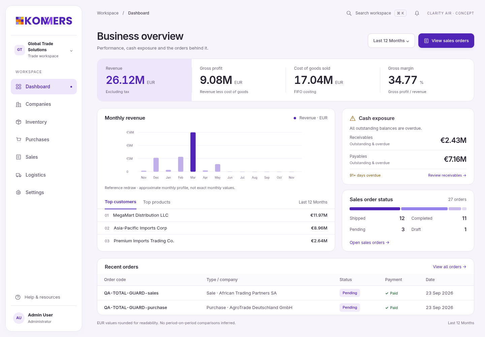
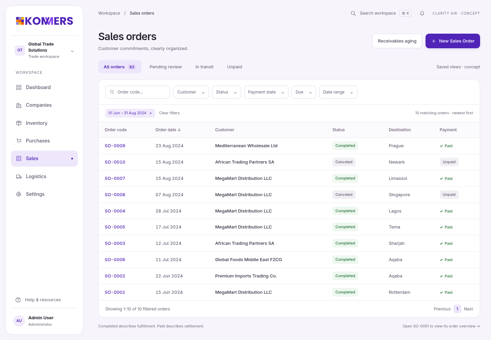
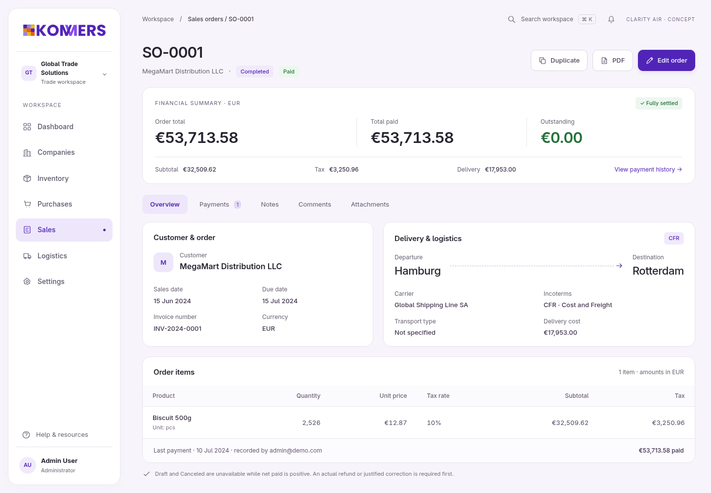
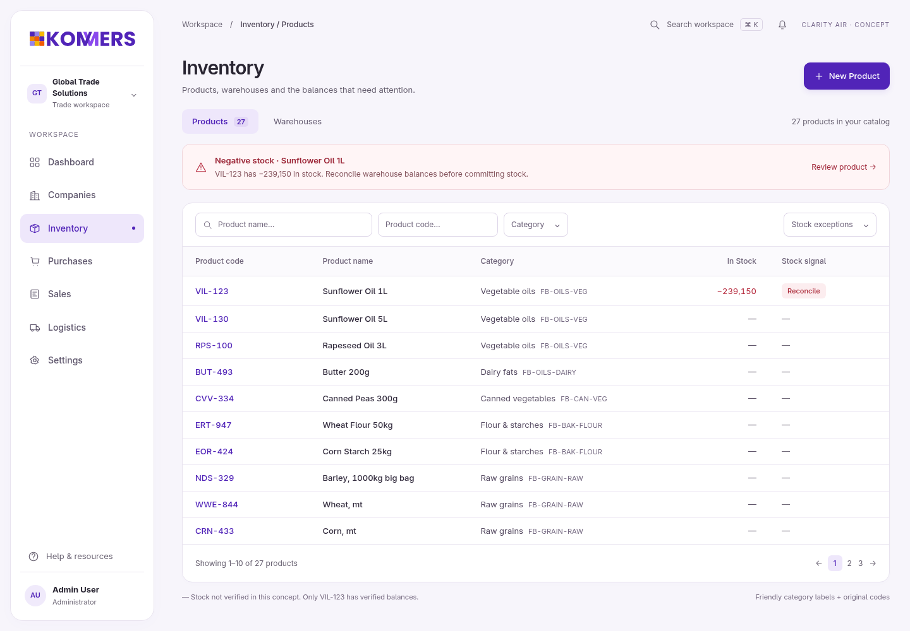
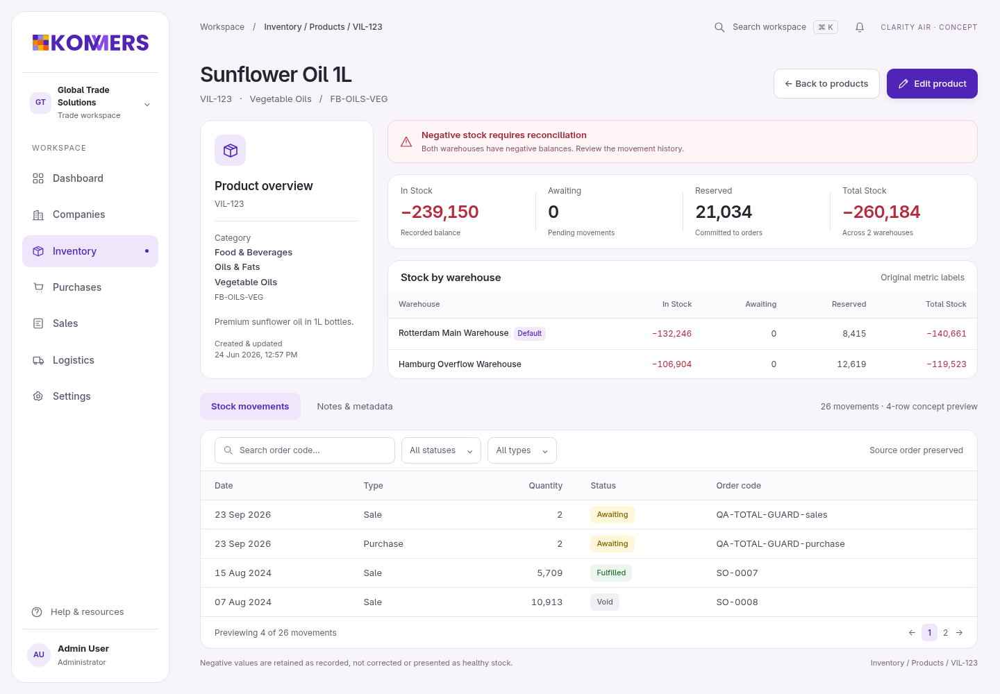

A softer, more spacious Clarity. Same Kommers identity. Five complete desktop concepts.
Static design concepts, not app implementation. Filters and record actions are visual proposals; local detail tabs and page links work.



